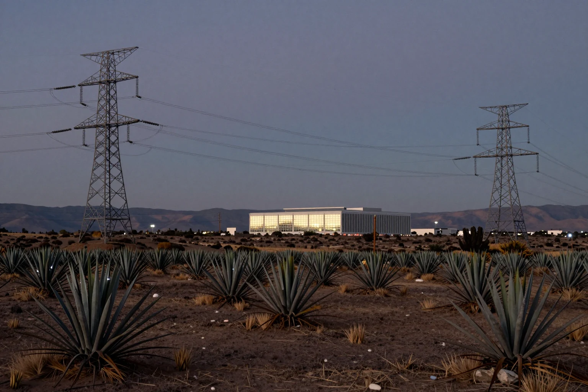

La IA en México no espera chips: espera cables
Durante dos años, la conversación sobre inteligencia artificial en México giró en torno a los centros de datos de Querétaro, esos edificios llenos de servidores donde viven la nube y los modelos de IA. Esta semana quedó claro dónde está el cuello de botella: no en los chips, sino en la electricidad que tiene que llegar hasta ellos.
El 1 de octubre la CFE presentó a inversionistas un plan de unos 37,500 millones de dólares a 2030. Incluye más de 154 proyectos de transmisión (las líneas de alta tensión y las subestaciones que llevan la energía desde las plantas hasta donde se consume) por 6,900 millones, buena parte con capital privado. Un día antes, el gobierno de Querétaro admitió que el reto está en la transmisión y que las empresas ya pagan de su bolsillo parte de esa infraestructura. La industria mira hacia Cancún y Veracruz, que tienen cables submarinos de internet, y se topa con la misma pared: sin megawatts conectados no hay proyecto que valga.
- Centro de datos
- Edificio lleno de servidores que guardan información y hacen los cálculos de las apps y de la IA. Consume mucha más electricidad que un edificio de oficinas común.
- Transmisión eléctrica
- Las líneas de alta tensión y las subestaciones que llevan la electricidad de las plantas a donde se usa. Puede sobrar generación y aun así faltar «carretera» para conectar un centro de datos.
- MW y GW
- Medidas de potencia eléctrica. Un gigawatt (GW) son 1,000 megawatts (MW).
- Esquema mixto
- Proyecto eléctrico en el que la CFE se asocia con inversionistas privados que ponen parte del dinero.
- La nube
- Servicios de almacenamiento y cálculo que se usan por internet y funcionan en centros de datos ajenos, no en tu propio equipo.
La red que alimenta a un centro de datos es la misma que abastece fábricas, comercios y casas. Si el plan avanza, podría haber más obra y empleo en construcción y mantenimiento eléctrico en el Bajío y el sureste. Si se retrasa, las inversiones en centros de datos pueden irse a otro país.
En la economía de la IA, el recurso escaso no es el silicio: es el kilowatt que llega a tiempo.
Ver fuente ↗
También: Querétaro reconoce que el reto es la transmisión: La Silla Rota (30-sep-2026) ↗
También: Cancún y Veracruz, por los cables submarinos: Expansión (1-oct-2026) ↗